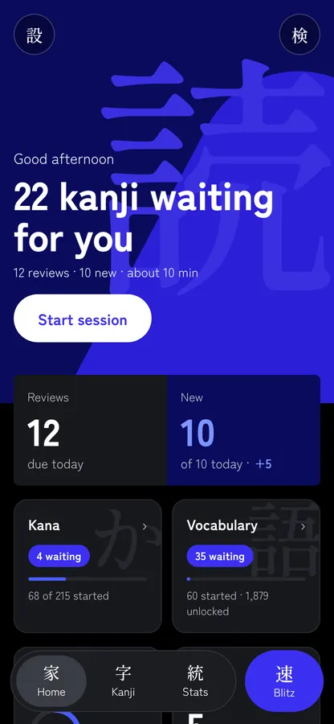
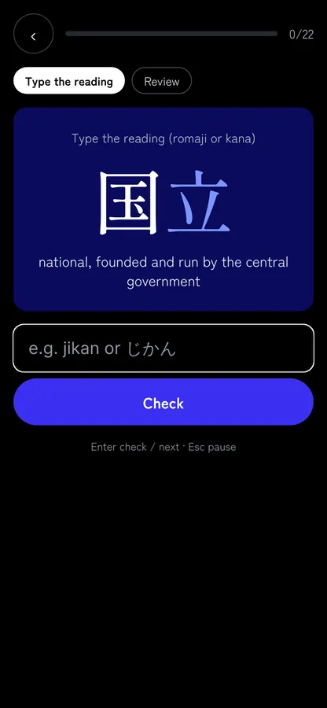
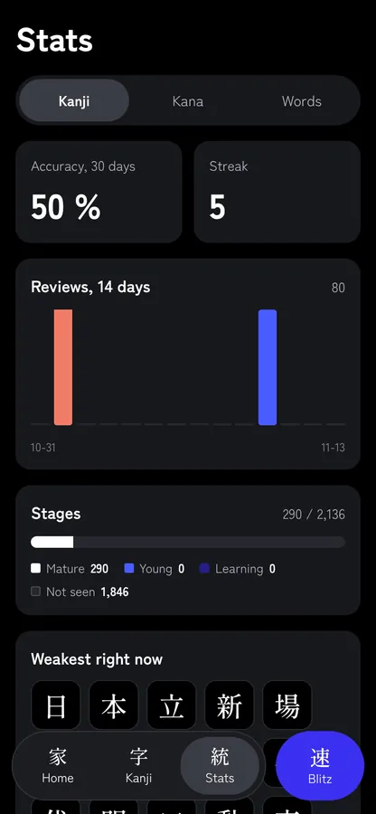

Kanjiskole
En app, der lærer dig at læse japansk. Et fritidsprojekt, bygget efter de samme krav, som jeg stiller på arbejdet.




Problemet
De fleste kanji-apps lærer dig tegnene ét ad gangen, uden sammenhæng. Men man læser ikke tegn, man læser ord. Og mange apps vil have en konto, sender analytics hjem og holder dine data som gidsel.
Tilgangen
- Kanji i rigtige ord, plus kana og ordforråd
- Spaced repetition med FSRS, så gennemgangen kommer, lige før du glemmer
- Alt virker offline, og dine data bliver på telefonen
- Et mørkt, roligt design med en stor glyf i baggrunden
Sikkerhed og privatliv
Jeg behandlede appen som et rigtigt produkt: trusselsmodel og sikkerhedsgennemgang før v1.0, ingen konti og ingen analytics. Afhængigheder er låst til præcise versioner, og alle ordbogskilder er krediteret og licenseret korrekt, så projektet er REUSE-compliant.
Hvad jeg lærte
- Native moduler skal matche Expo SDK’ens versionstabel præcist. Nu tjekker et script det:
npm run check:native. - Efter ét forkert gæt om et crash: hent logcat. Ikke et gæt mere.
Hvad nu
Synkronisering, flere stemmer til ord uden lydfil og håndskriftsøvelser med stregrækkefølge.
Sig hej
Der er ingen kontaktformular, så der er intet at spamme eller hacke. Skriv bare en mail.
lena@lenagibson.eu